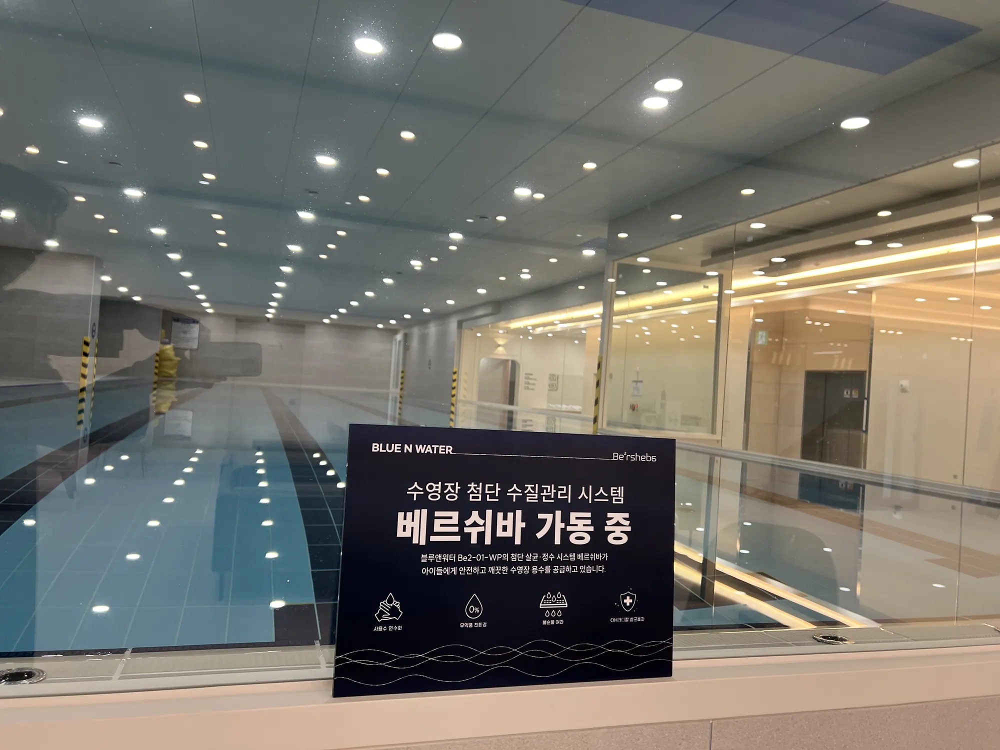
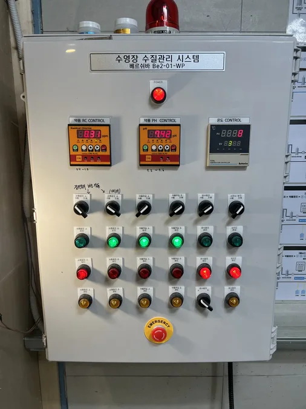
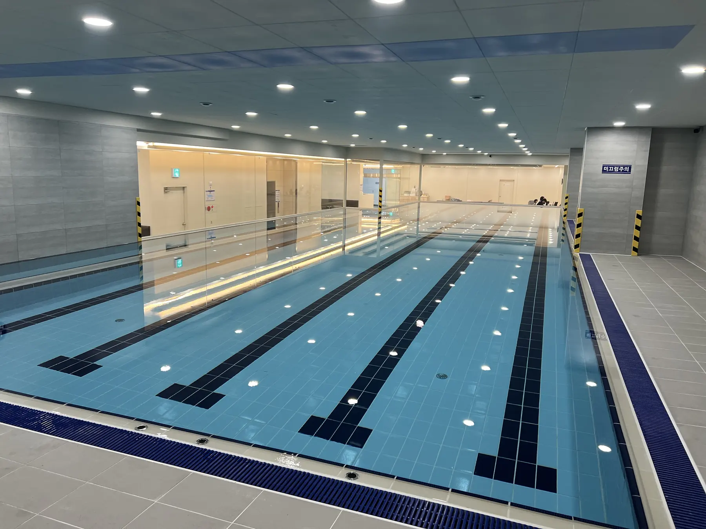
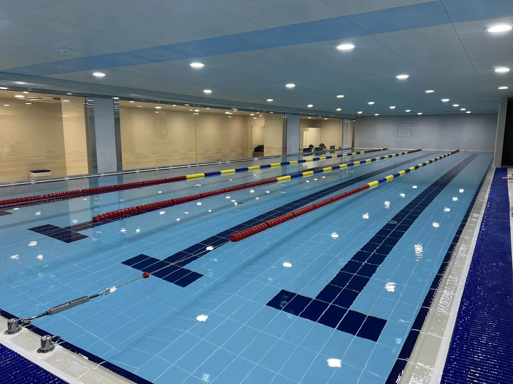

BLUE N WATER
プール水処理
プールやリゾートの水質管理において、薬品依存度を低減し、濁度、臭気、残留塩素、ろ過効率を改善するシステムです。
プールやリゾートの水質管理において、薬品依存度を低減し、濁度、臭気、残留塩素、ろ過効率を改善するシステムです。
画像スロットassets/images/solutions/pool.jpg
この場所に実際の写真やレンダリング画像を差し替えてください。
この場所に実際の写真やレンダリング画像を差し替えてください。
画像スロットこの場所に実際の写真やレンダリング画像を差し替えてください。
Field Reference
プール水質管理 現場事例
食品加工水再利用、プール水質管理、現場条件に応じた水処理運用にBLUE N WATERの技術が適用される様子を示す現場事例画像です。

AQUACOM / RaDX Applied Site
食品加工水再利用、プール水質管理、現場条件に応じた水処理運用にBLUE N WATERの技術が適用される様子を示す現場事例画像です。


